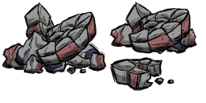

This article has been removed from the game / will not be implemented. The information presented here is for reference only. |
| Broken Bits and Pieces of Stone | |
|  |
|
| Tool Required | |
| Renewable? | No |
| Common Biomes | Ruins |
| DebugSpawn | "rubble" |
Broken Bits and pieces of stone (Rubble) is a minable structure found in the Ruins. It can currently be spawned into the game with the console using the prefab "rubble". When mined, it can drop Rocks and Cut Stone, as well as a small chance of dropping Frazzled Wires, Gears, Green Gem, Yellow Gem, Orange Gem, Nightmare Fuel or Thulecite.